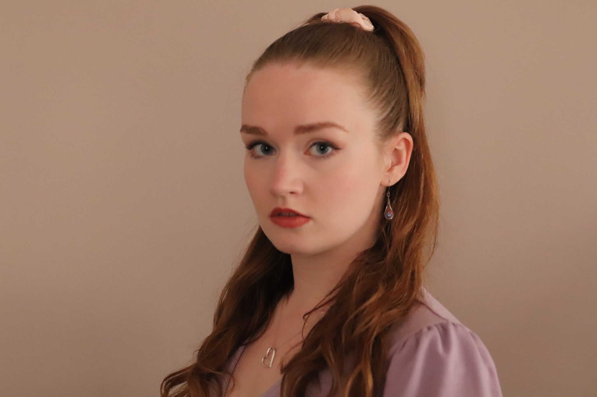

Watch & Listen
Performances



About Me
Hi, I'm Franny — a vocalist, musical director, and performer based in Cambridgeshire, UK. I hold a BA in Music from the University of Bristol, a PGCE in Music Education from the University of Cambridge, a Grade 8 ABRSM in Singing and a Diploma LCM in Musical Theatre. From directing the award-winning a cappella group The Bristol Suspensions to performing in Musical Theatre showcases and reaching the ICCA Finals, singing has always been at the heart of everything I do.
I perform everything from current pop and classics to empowering musical theatre numbers and sultry jazz. If you would like to find out more about set lists to suit the style of your event, please contact me at frannymcgirr@outlook.com.
Watch & Listen
Career
2015
Diploma LCM Musical Theatre
2017
ABRSM Grade 8 Singing
2020
Musical Director, Bristol Suspensions (Award-Winning A Cappella Group)
2020
Musical Theatre Bristol Showcase
2021
ICCA Finalists
2022
BA Music, University of Bristol
2022
Musical Theatre Bristol Showcase
2024
PGCE Music Education, University of Cambridge
2026
The Dolly Show
Get in Touch
Find me online or drop me an email — I'd love to connect.